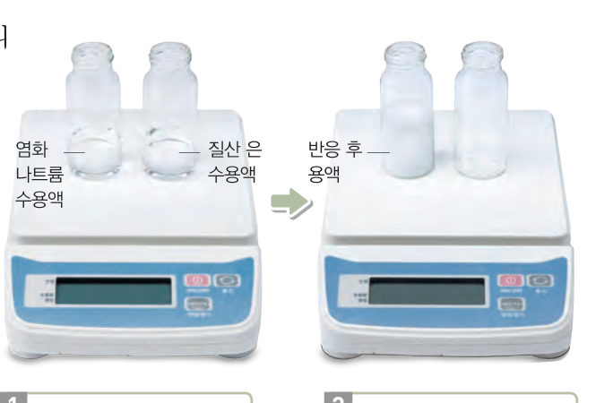
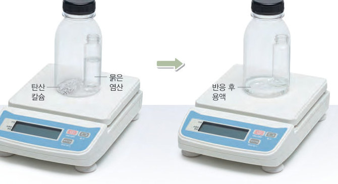
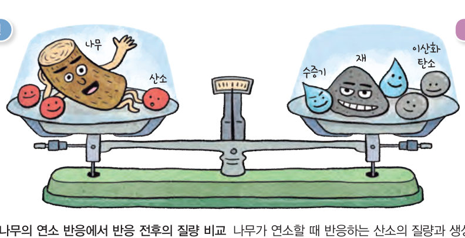

살아있는 교과서 · Ⅰ. 화학 반응의 규칙과 에너지 변화 · 2. 화학 반응의 규칙 · 01 24~29쪽
화학 반응에서 변하지 않는 질량
우유가 상하면 질량은 어떻게 될까? 가상 전자저울로 앙금 생성·기체 발생·강철 솜 연소 전후의 질량을 재 보고, 원자 모형으로 질량 보존 법칙이 성립하는 까닭을 논증해 보자.
🎯 이 단원을 배우면 — 화학 반응이 일어날 때 질량이 보존됨을 설명하고, 질량 보존 법칙을 모형을 이용하여 설명할 수 있다.
출발수소가 연소하는 데 필요한 산소의 양을 어떻게 알 수 있을까? 24~25쪽
24쪽하늘 위로 날아간 로켓
로켓 중에는 수소를 연료로 사용하는 로켓이 있어. 이 로켓은 수소가 연소할 때 발생하는 수증기로 추진력을 얻어 날아갈 수 있대. 로켓에는 수소의 연소에 필요한 산소도 실어야 하는데, 이때 수소와 산소의 비율을 잘 맞추어야 한대. 수소가 연소하는 데 필요한 산소의 양을 어떻게 알 수 있을까?
▶ 이미 배운 내용 | 수소와 산소가 반응하여 수증기가 생성된다.
🔑 첫 번째 열쇠 수소가 연소하여 생성된 수증기의 총질량과 반응물의 총질량을 비교한다. · 두 번째 열쇠 수증기가 생성될 때 반응하는 수소와 산소의 질량 관계를 알아본다. · 세 번째 열쇠 수증기가 생성될 때 수소 기체, 산소 기체, 수증기의 부피 관계를 알아본다.
이 단원과 관련해 이미 알고 있는 것에 표시해 보자.
탐구 · 측정화학 반응에서의 질량 변화 측정 26~27쪽
26쪽우유가 상하면 질량은 어떻게 될까?
우유를 실온에 오래 두면 화학 반응이 일어나 덩어리가 생기거나 기체가 발생한다. 다음 탐구로 화학 반응이 일어날 때 물질의 질량은 어떻게 되는지 알아보자.

26쪽Ⓐ 앙금 생성 반응 — 염화 나트륨 수용액 + 질산 은 수용액

27쪽Ⓑ 기체 발생 반응 — 플라스틱 병 속 탄산 칼슘 + 묽은 염산
Ⓐ 유리병 2 개에 염화 나트륨 수용액 10 mL와 질산 은 수용액 10 mL를 각각 넣고 총질량을 측정한 뒤, 두 수용액을 섞고 반응이 끝나면 다시 총질량을 측정한다.
Ⓑ 플라스틱 병에 탄산 칼슘을 넣고, 묽은 염산 10 mL가 든 유리병을 넣는다. 뚜껑을 꽉 닫고 총질량을 측정한 뒤, 병을 기울여 반응시키고 다시 총질량을 측정한다.
⚠️ 시약이 옷이나 눈, 피부에 닿지 않게 주의하고, 유리 기구를 다룰 때 깨지지 않게 조심한다. 남은 물질은 지정된 곳에 모아 처리한다.
가상 전자저울반응 전후의 총질량을 재 보자
실험을 고르고 [반응시키기]를 눌러 보세요.
1실험 결과를 정리해 보자. (반응 전 → 반응 후 총질량)
Ⓐ 두 수용액을 섞어 앙금이 생성될 때
Ⓑ 뚜껑을 닫은 병에서 기체가 발생할 때
Ⓑ 반응 후 뚜껑을 열었을 때
열린 곳에서 강철 솜을 태울 때
2Ⓐ에서 두 수용액을 섞으면 이 생기고, Ⓑ에서 병을 기울이면 이 생긴다.
3정리하기 Ⓐ와 Ⓑ의 결과로 알 수 있는 사실을 '앙금 생성, 기체 발생, 화학 반응, 질량'을 사용하여 설명해 보자.
평가 기준
스스로 평가
탐구 기능 물질의 질량을 정확하게 측정하였는가?
탐구 기능 화학 반응 전후에 물질의 총질량을 옳게 비교하였는가?
인성 실험 과정에서 안전에 유의하였는가?
교과서 · 해 보기질량 보존 법칙이 성립하는 까닭은 무엇일까? 28~29쪽
염화 나트륨 수용액과 질산 은 수용액을 섞으면 흰색 앙금인 염화 은이 생성되는데, 이때 반응 전후에 질량은 변하지 않는다. 또, 묽은 염산에 탄산 칼슘을 넣으면 이산화 탄소 기체가 발생하는데, 이때 반응 전후에 질량은 변하지 않는다. 이와 같이 화학 반응이 일어날 때 반응물의 총질량과 생성물의 총질량은 같은데, 이를 질량 보존 법칙이라고 한다.
모형으로 논증하기염화 나트륨 + 질산 은 → 염화 은 + 질산 나트륨
12단계 반응 전후에 원자의 수를 종류별로 비교하기 (모형 1 세트 기준)
원자
나트륨
염소
은
질소
산소
반응 전
1
1
1
1
3
반응 후
23단계 반응 전후에 원자의 종류와 수가 물질의 총질량은 하다.
오개념 바로잡기 염화 나트륨, 질산 은, 염화 은처럼 이온으로 이루어진 물질은 양이온과 음이온 한 쌍이 독립적으로 존재하는 분자가 아니다. 수많은 양이온과 음이온이 서로를 둘러싸며 규칙적으로 배열된 형태로 존재한다.
화학 반응이 일어날 때 물질을 구성하는 원자의 배열은 달라지더라도 원자의 종류와 수는 변하지 않으므로 물질의 총질량은 변하지 않는다.
기체가 발생하는 반응이나 물질이 연소하는 반응에서 반응 전후에 질량이 변하는 것처럼 보일 때가 있다. 예를 들어 나무가 연소하고 남은 재는 나무보다 질량이 작다. 이는 나무가 연소할 때 생성되는 이산화 탄소와 수증기가 공기 중으로 날아가기 때문이다. 이와 같이 반응 전후에 질량이 변하는 것처럼 보이는 반응도 반응물과 생성물을 모두 고려하면 질량 보존 법칙이 성립한다.

그림 1-6나무의 연소 반응에서 반응 전후의 질량 비교 — 나무 + 산소 = 재 + 이산화 탄소 + 수증기
3나무가 연소할 때 남은 재의 질량이 나무보다 작은 까닭은 생성된 가 공기 중으로 날아가기 때문이다.
🧩 첫 번째 열쇠 (29쪽)
수소가 연소하여 수증기가 생성될 때 반응하는 수소와 산소의 총질량은 생성되는 수증기의 총질량과 ( ).
스스로 확인하기26쪽 학습 목표를 달성했는지 확인해 보자 29쪽
1화학 반응이 일어날 때 반응물의 총질량과 생성물의 총질량은 같은데, 이를 법칙이라고 한다.
2화학 반응이 일어날 때 물질을 구성하는 원자의 와 가 변하지 않으므로 질량 보존 법칙이 성립한다.
3과학적 사고력 강철 솜이 연소하여 생성된 산화 철은 강철 솜보다 질량이 크다. 강철 솜의 연소 반응에서 질량 보존 법칙이 성립하는지 설명해 보자.
개념 확인화학 반응에서 변하지 않는 질량
1화학 반응이 일어날 때 반응물의 총질량과 생성물의 총질량은 같은데, 이를 법칙이라고 한다.
✔옳으면 O, 옳지 않으면 X
⑴ 반응물의 총질량과 생성물의 총질량은 같다.
⑵ 물리 변화에서는 질량 보존 법칙이 성립하지 않는다.
⑶ 기체가 발생하는 반응에서는 질량 보존 법칙이 성립하지 않는다.
⑷ 질량 보존 법칙이 성립하는 까닭은 반응 전후에 원자의 종류와 수가 변하지 않기 때문이다.
3염화 칼슘(가) + 탄산 나트륨(나) → 염화 나트륨(다) + 탄산 칼슘(라) 에서 질량 관계:
4다음 반응이 열린 용기에서 일어날 때 반응 후의 질량 변화
⑴ 강철 솜을 토치로 가열한다.
⑵ 묽은 염산에 탄산 칼슘을 넣는다.
⑶ 황산 나트륨 수용액과 염화 바륨 수용액을 혼합한다.
5물질 변화가 일어날 때 질량 보존 법칙이 성립하는 것을 모두 고르시오.
6수소 3 g이 질소와 모두 반응하여 암모니아 17 g이 생성되었을 때 반응한 질소의 질량은 g이다.
7탄산수소 나트륨 84 g을 가열하였더니 탄산 나트륨 53 g과 물 9 g이 생성되었다. 이때 발생한 이산화 탄소의 질량은 g이다.
8탄산 칼슘과 묽은 염산을 닫힌 병에서 반응시킬 때 (가) 반응 전, (나) 반응 후, (다) 뚜껑을 열었을 때의 질량 비교:
스스로 정리하기화학 반응에서 변하지 않는 질량
1질량 보존 법칙
⑴ 질량 보존 법칙: 화학 반응이 일어날 때 반응물의 총질량과 의 총질량은 같다. ⑵ 성립하는 까닭: 화학 반응이 일어날 때 원자의 배열은 달라지지만 원자의 는 변하지 않는다. ⑶ 열린 용기에서 기체가 발생하면 질량이 하는 것처럼, 연소할 때 산소가 결합하면 하는 것처럼 보이지만, 반응물과 생성물을 모두 고려하면 질량 보존 법칙이 성립한다.
평가 기준
스스로 평가
화학 반응이 일어날 때 질량이 보존됨을 설명할 수 있다.
질량 보존 법칙을 모형을 이용하여 설명할 수 있다.
제출학생 정보 · 제출하기
모든 활동을 마친 뒤 제출하면 전체가 한 번에 채점되고 피드백이 나타나요. 답안은 선생님 스프레드시트(중3 탭)에 기록돼요.